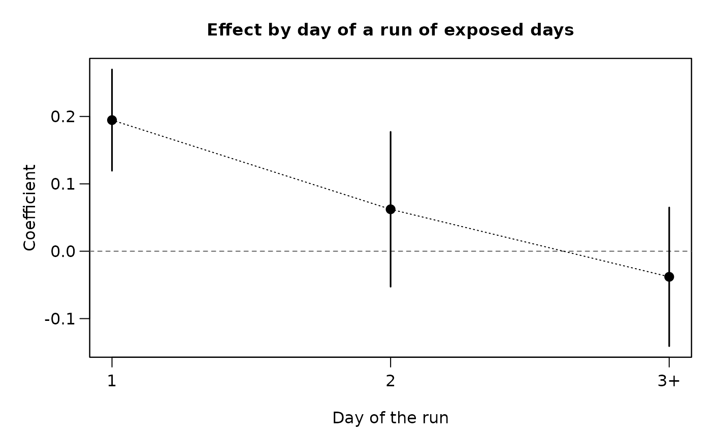

Counts, for each place and day, how many days in a row the place has
been exposed (smoke present, pollution above a threshold), and makes the
indicators of the first, second, ... day of a run. runfx() fits a
model with them: the effect by day in the run, as Lee and Lee (2026,
equation 3, p. 12) estimate it, Crime = b1 Day1 + b2 Day2 +
b3 Day3+ + ..., which shows whether the effect fades as people adapt (it
rises on
the first and second smoke days and falls from the third in their 21
cities).
Arguments
- data
A data frame, one row per place and day.
- var
The name of the exposure column.
- unit, day
The names of the place and day columns (days numbers or dates).
- thr
A day is exposed when
varis abovethr.- cap
The day of a run from which one indicator takes all, at most 67108864 (2^26).
- step
The length of a day in the units of
day.- y
The name of the outcome column.
- ctrl
NULLor the names of other regressors.- est
The estimator:
ppmlfe()(the default) orivfe()as least squares.- ...
The other arguments of
est(fe,clus,se, ...). Forplot(), passed to the base-graphics call.- x
An object of class
runfx.- main
NULL(a default title) or one string.- col
NULL(the palette) or colours.- pal
NULL(the session palette, seeplotopt()) or a palette name forblpal().
Value
exprun(): a data frame with run (0 when not exposed) and the
indicators run1, ..., run<cap>p. runfx(): a list of class
runfx, coef (the rows of the indicators) and fit.
Details
A run continues only to the next calendar day (step): a missing day
or an unexposed day ends it. cap sets the last indicator, which takes
that day and all later ones (3 in the paper: run3p). Lee and Lee use
Poisson pseudo-likelihood with ZIP-by-year, year-by-month, city-by-month
and weekend effects and errors clustered by city and day of the year
(p. 11 and table 3); ppmlfe() absorbs one or two sets of effects, so
give others as columns of ctrl.
plot() draws the effect of each day of a run with its
interval (the last day standing for that day and later), and returns
the rows drawn.
References
Lee, G. and Lee, S. (2026). The impact of wildfire smoke exposure on crime. Environmental and Resource Economics, 89, 5. doi:10.1007/s10640-025-01053-2
Examples
d <- data.frame(area = 1, day = 1:8, smoke = c(0, 1, 1, 1, 1, 0, 1, 0))
cbind(d, exprun(d, "smoke", "area", "day"))
#> area day smoke run run1 run2 run3p
#> 1 1 1 0 0 0 0 0
#> 2 1 2 1 1 1 0 0
#> 3 1 3 1 2 0 1 0
#> 4 1 4 1 3 0 0 1
#> 5 1 5 1 4 0 0 1
#> 6 1 6 0 0 0 0 0
#> 7 1 7 1 1 1 0 0
#> 8 1 8 0 0 0 0 0
# simulated: crime up on the first two smoke days
set.seed(7)
d <- expand.grid(day = 1:120, area = 1:12)
d$smoke <- rbinom(nrow(d), 1, 0.3)
r <- exprun(d, "smoke", "area", "day")
d$crimes <- rpois(nrow(d), exp(1 + 0.2 * r$run1 + 0.1 * r$run2))
f <- runfx(d, "crimes", "smoke", "area", "day", fe = c("area", "day"))
f
#> runfx: the effect by day of a run of exposed days
#> term est se stat p lo hi rr
#> run1 0.19460 0.03834 5.0753 3.870e-07 0.11945 0.26975 1.2148
#> run2 0.06225 0.05863 1.0617 2.884e-01 -0.05267 0.17717 1.0642
#> run3p -0.03799 0.05251 -0.7234 4.694e-01 -0.14091 0.06493 0.9627
plot(f)
